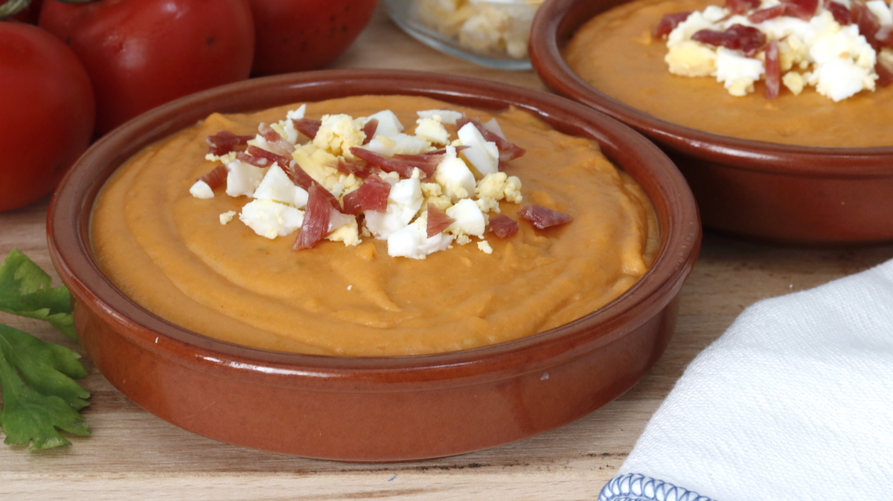

Ingrediente:
- Tomate-1kg
- Pan duro remojado en agua
- aceite de oliva virgen extra
- Piemento rojo
- Pimiento verde
- jamon
- huevo
- atun
Preparación:
- Trituramos los tomates pelados
- Añadimos el pan
- Despues añadimos los pimientos
- unas cucharadas de aceite
- Para terminar batimos todo hasta conseguir el espesor al gusto
Información nutricional (100g):
- Grasas
- 9g
- Hidratos de carnbono
- 3g
- Calorias
- 97Kcal
- Proteinas
- 1g